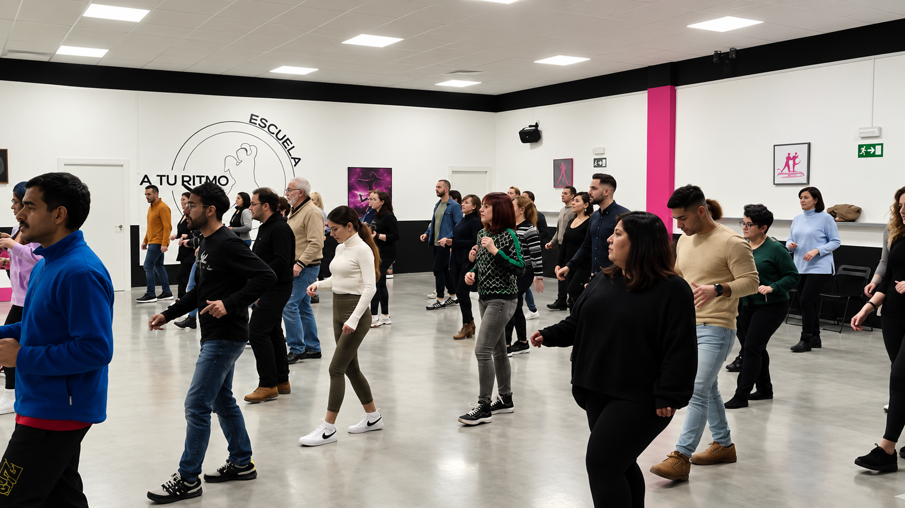

Experiencia que se comparte
Un equipo con recorridos en la enseñanza, la formación y los escenarios, dentro y fuera de España.

La música nos mueve y el baile nos une. Descubre salsa, bachata, zouk brasileño, kizomba, samba, sevillanas, danza oriental y taichí en nuestra escuela de Barakaldo. Tanto si quieres dar tus primeros pasos como si buscas seguir aprendiendo, aquí empieza tu próxima experiencia.
Cada estilo tiene su carácter. Algunos te invitan a soltar energía; otros, a jugar con la musicalidad, la conexión o la expresión corporal. ¿Con cuál te apetece empezar?
¿Te interesa una disciplina concreta? ¿Prefieres un día u horario determinado? Consulta los grupos, horarios y tarifas de la escuela para descubrir qué opción puede encajar contigo. Y si tienes dudas sobre el nivel, pregúntanos: te ayudaremos a encontrar por dónde empezar.
Explora el calendario y las tarifas de ejemplo del curso 2025/2026. Para información actual, consulta con la escuela.
Ver calendario y tarifas de ejemplo
Una canción que ya no escuchas igual. Un movimiento que por fin te sale. Personas con las que compartir una pasión. En A Tu Ritmo vivimos el baile como una forma de aprender, expresarnos y disfrutar juntos. Ven a conocer nuestra escuela y encuentra ese estilo que te hace sonreír antes de que termine la música.
Conoce A Tu RitmoDetrás de cada clase hay personas que llevan años aprendiendo, enseñando y disfrutando de la música. Queremos que cada alumno encuentre un espacio para avanzar, expresarse y compartir.
Un equipo con recorridos en la enseñanza, la formación y los escenarios, dentro y fuera de España.
Desde la salsa y la bachata hasta el zouk, la kizomba, la danza oriental o el taichí: cada disciplina tiene su espacio y su personalidad.
Técnica, musicalidad, práctica y buen ambiente. Porque mejorar también puede ser una de las mejores partes de la semana.
Profesores, DJs, encuentros y congresos que mantienen el baile vivo dentro y fuera de la escuela.
Clases, práctica, música, movimiento y gente que comparte las ganas de bailar. Descubre un poco de lo que se vive en nuestra escuela y en las actividades que forman parte de esta comunidad.
Una clase en A Tu Ritmo, desde dentro.
Personas, música y buenos momentos.
Conoce a quienes ponen experiencia, técnica y pasión en cada sesión. Profesionales con historias diferentes y algo en común: las ganas de transmitir lo que saben.


¿Te apetece probar un estilo nuevo? ¿Llevas tiempo pensando en aprender a bailar? Cuéntanos qué te interesa y solicita una clase de prueba gratuita en A Tu Ritmo. Es la mejor manera de empezar a descubrir nuestra escuela desde dentro.
Talleres, encuentros y propuestas que nos permiten seguir disfrutando del baile, aprender de otros profesionales y compartir pista con personas que viven la música como nosotros.
Nuestro congreso dedicado al zouk brasileño reúne a bailarines, docentes y participantes de distintos lugares. Un encuentro para formarse, conectar y celebrar la pasión por este estilo, con actividades ligadas a la escena internacional del zouk.
Descubrir el congreso →Si quieres saber más sobre nuestras clases, consultar la programación o simplemente conocer la escuela, estaremos encantados de escucharte. El primer paso puede ser tan sencillo como escribirnos.
Contactar con la escuela ↗El vínculo de A Tu Ritmo con la música va más allá de las clases. ATR DJs Company reúne perfiles que viven el baile también desde la cabina, conectando con la escena de la salsa, la bachata, la kizomba y el zouk brasileño.
Eder Ojeda. Especialista en sesiones SBKZ y zouk brasileño, con trayectoria en congresos y eventos internacionales.
Rebeca. Una propuesta musical especialmente vinculada al zouk brasileño y a eventos nacionales e internacionales.
Joseba. Bachata, actualidad musical y un estilo propio nacido de la pista y las fiestas de la escuela.
Sí. Disponemos de un cuestionario para solicitar una prueba gratuita. Nuestro equipo te indicará las opciones disponibles.
Salsa, bachata, zouk brasileño, kizomba, samba, sevillanas, danza oriental y taichí, según la programación de la escuela.
Estamos en Ibaibe nº 15, Barakaldo, Bizkaia, cerca de Bilbao.
En la sección «Horarios y tarifas», donde publicaremos la información vigente de los grupos.
Cuéntanos qué has bailado antes o si estás empezando. Te orientaremos sobre las opciones que existan en ese momento.